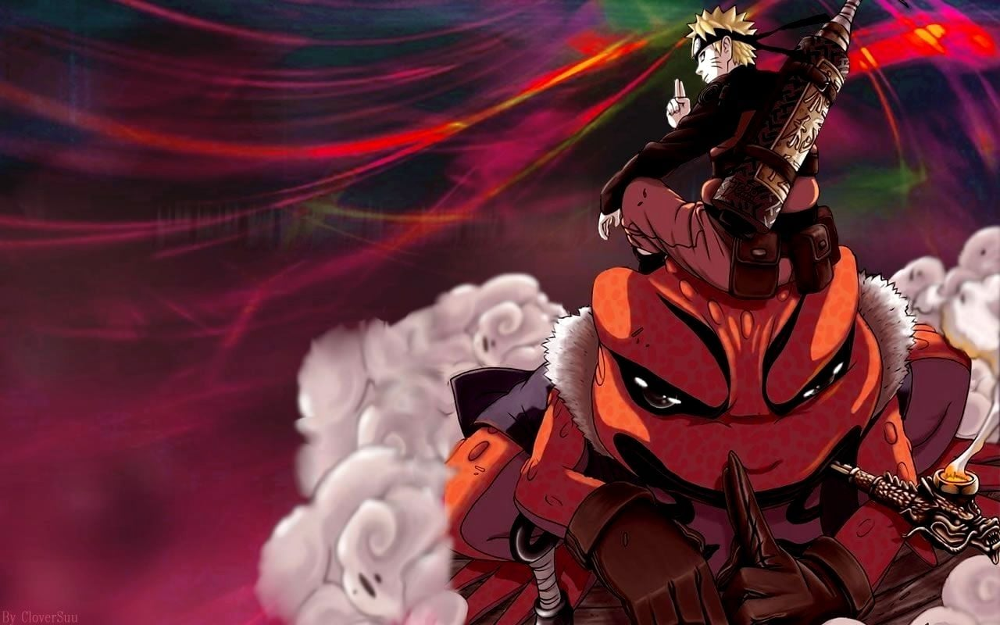
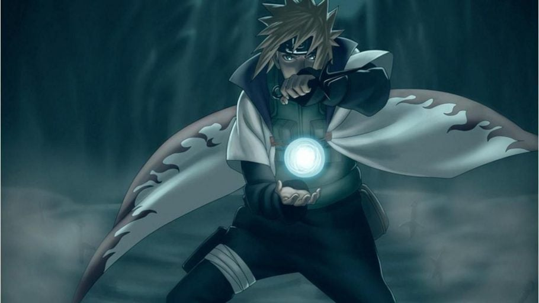
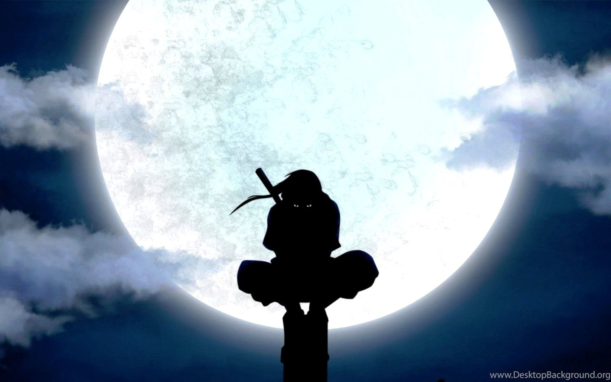

Imagenes Destacadas



Naruto Uzumaki:Fue miembro del Equipo Kakashi junto a Sakura Haruno y Sasuke Uchiha. Actualmente es el Séptimo Hokage de Konoha, cumpliendo su sueño, así como también el esposo de Hinata Hyūga y padre de Boruto Uzumaki y Himawari Uzumaki.
Hinata Hyuga:Cuyo nombre actual es Hinata Uzumakies una kunoichi de rango Chūnin de Konohagakure y antigua heredera de la rama principal del Clan Hyūga, además de ser hija de Hiashi Hyūga, prima de Neji Hyūga y hermana mayor de Hanabi Hyūga. Formó parte del Equipo Kurenai, siendo compañera de Kiba Inuzuka y Shino Aburame. Posteriormente, se convirtió en la esposa de Naruto, con quien tuvo dos hijos, Boruto Uzumaki y Himawari Uzumaki.
Sakura Haruno:Cuyo nombre actual es Sakura Uchiha es la tritagonista de la serie.Es una kunoichi de nivel Jōnin, miembro del Equipo Kakashi y una gran amiga de Naruto Uzumaki. Después de su entrenamiento con Tsunade, se convirtió en una Ninja Médico. Finalmente se convirtió en la esposa de Sasuke Uchiha y la madre de Sarada Uchiha.
Kakashi Hatake:es un shinobi de Konohagakure. Fue un Jōnin, ex-ANBU y el líder del Equipo 7. Fue conocido mundialmente por su uso del Sharingan, lo que le valió el apodo de Kakashi el Ninja que Copia.En su adolescencia fue alumno de Minato Namikaze y compañero de equipo de Obito Uchiha y Rin Nohara. También fue el capitán de la Tercera División de la Gran Alianza Shinobi. Después de los acontecimientos de la Cuarta Guerra Mundial Shinobi, Kakashi se convirtió en el Sexto Hokage de Konoha.